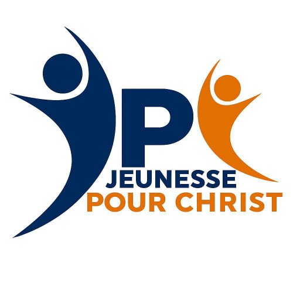
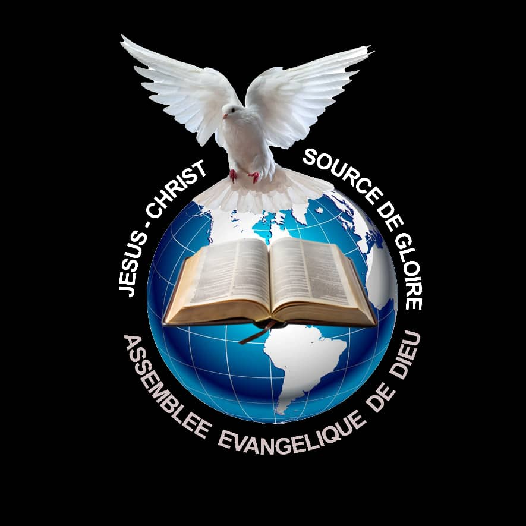
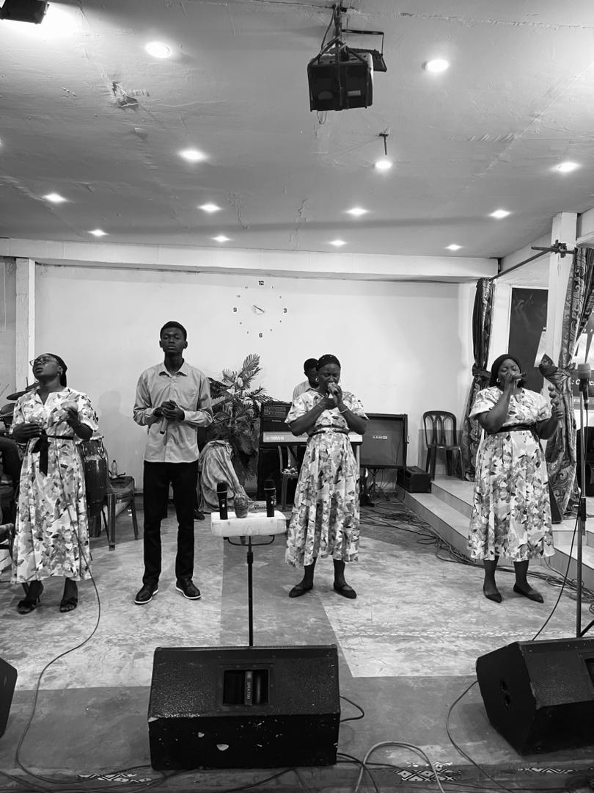
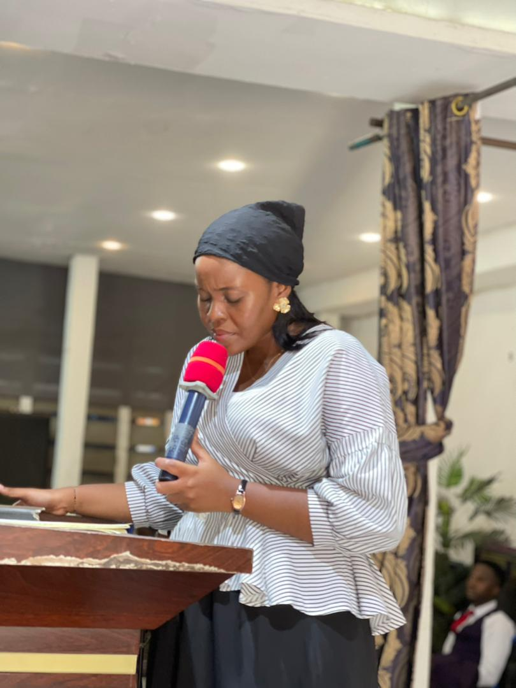
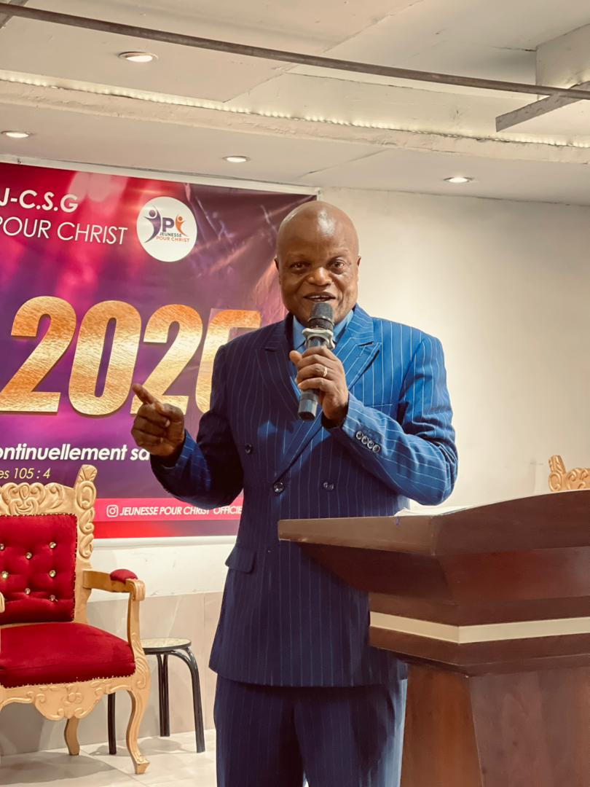
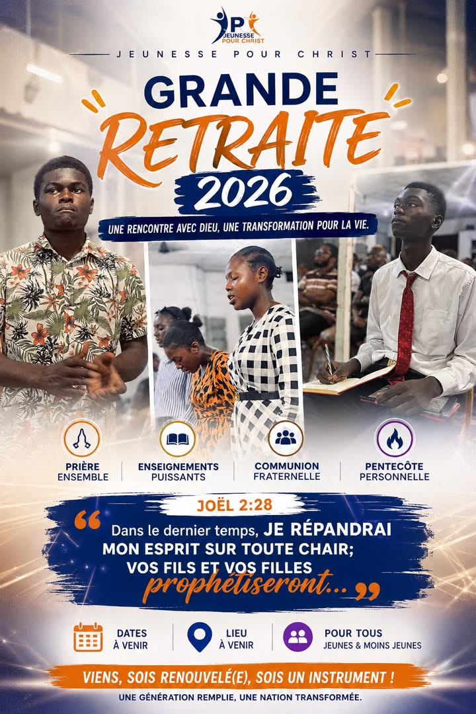
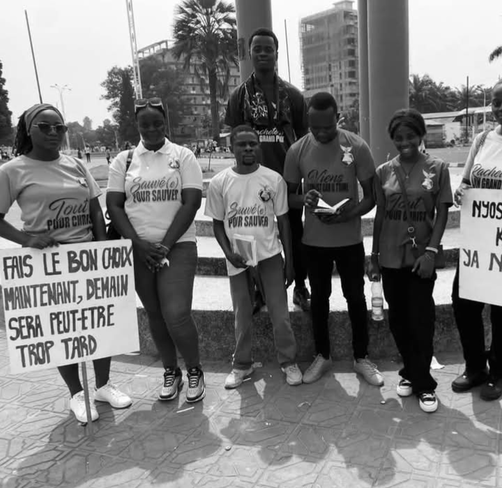

Culte de jeunesse
Retrouvez-nous pour un moment de communion, d'adoration et d'enseignement de la Parole.
En savoir plus

Assemblée Evangélique de Dieu Jésus Christ Source de Gloire
Une génération pour Christ, une jeunesse pour Sa gloire
QUI SOMMES-NOUS ?
La Jeunesse Pour Christ est le département de jeunesse de l'Assemblée Evangélique de Dieu Jésus Christ Source de Gloire.
Notre désir est de voir une génération de jeunes enracinés dans la Parole de Dieu, engagés dans leur foi et disposés à servir Christ.
RESTEZ INFORMES
Retrouvez-nous pour un moment de communion, d'adoration et d'enseignement de la Parole.
En savoir plusApprofondissons ensemble notre connaissance de la Parole de Dieu.
En savoir plusPortons l'évangile autour de nous et soyons des témoins de Christ dans notre génération.
En savoir plusUn moment consacré à la prière, à l'adoration, à la communion fraternelle et à l'écoute de la Parole de Dieu.
Un cadre d'apprentissage permettant aux jeunes d'approfondir leur connaissance des Saintes Ecritures et de mieux comprendre la volonté de Dieu.
Des moments consacrés au partage de l'Evangile, afin d'annoncer Christ et d'être des témoins dans notre génération.
GRANDIR DANS LA FOI
Découvrez comment développer une relation profonde avec Dieu et demeurer fidèle à sa Parole dans sa jeunesse.
Lire l'enseignementApprofondissons ensemble les Saintes Ecritures afin de mieux comprendre la volonté de Dieu.
Lire l'enseignementDécouvrons comment vivre une jeunesse engagée, responsable et entièrement consacrée à Christ.
Lire l'enseignementLa jeunesse est une période importante de la vie. C'est le moment d'apprendre à connaître Dieu, de développer une relation avec Lui et de construire sa vie sur Sa Parole.
Marcher avec Dieu signifie apprendre à Lui faire confiance, à écouter Sa Parole et à mettre en pratique Ses enseignements dans notre vie quotidienne.
La parole de Dieu nous permet de mieux connaître le coeur de Dieu et de comprendre Sa volonté pour notre vie.
Etudier régulièrement les Saintes Ecritures nous aide à grandir dans la foi et à développer une vie fondée sur les principes bibliques.
Être conscré à Christ signifie choisir de vivre pour Lui et de mettre nos dons, notre temps et nos capacités au service de Son oeuvre.
Une jeunesse consacrée à Christ peut devenir une génération qui influence positivement son entourage et témoigne de l'évangile.
Nos moments en images





AGENDA JPC
NOUS CONTACTER
Vous avez une question, une suggestion ou souhaitez rejoindre la JPC ? Ecrivez-nous.
Kinshasa, RDC